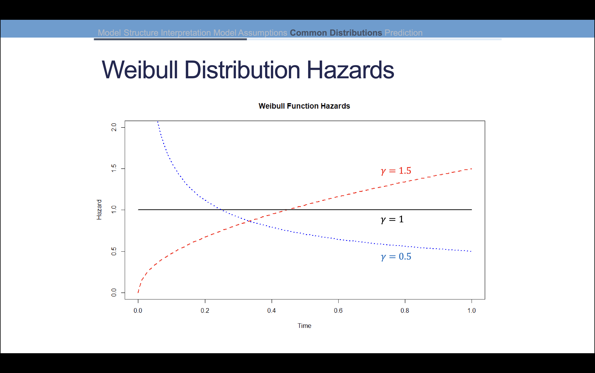
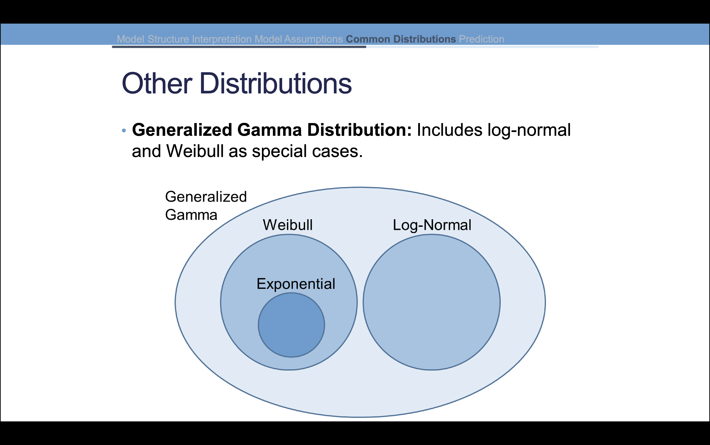
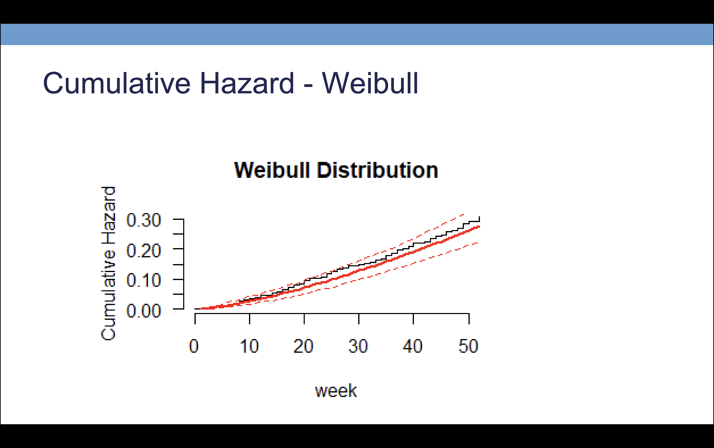

1 Model Structure
AFT models are parametric and we assume failure time \(T\) has a particular structure and distribution. We are trying to model time until failure \(T\) as a function of covariates \(X\).
In contrast, Kaplan-Meier is nonparametric and makes no assumption on failure time. Parametric methods allow for more detailed estimation than nonparametric methods only if the distribution is specified correctly.
2 AFT Model
The accelerated failure time model is a regression that relates covariates to the event time \(T\).
\[ T_i = e^{\beta_0 + \beta_1x_{i,1} + \cdots + \beta_kx_{i,k} + \sigma e_i} \]
- \(\sigma\) is the scale parameter of the distribution
We could also transform this model into linear regression by taking the natural log of both sides of the equation.
\[ \log T_i = \beta_0 + \beta_1x_{i,1} + \cdots + \beta_kx_{i,k} + \sigma e_i \]
2.1 Scale vs. Rate
Another common form of the scale parameter is the multiplicative inverse of the scale, called the rate (1 / \(\sigma\))
If \(\sigma\) is small, events are not spread out and events are happening close to one another or have a high rate.
If \(\sigma\) is large, then events are spread out and there is a smaller rate of events.
2.2 Errors and Assumptions
Errors in the AFT model can follow many different distributions. Assumptions:
- Specify correct distribution
- Distribution belongs to the location, scale family
- Independence across observations
3 Interpretation
If parameter estimate is positive, increases in that variable increase the expected survival time.
If a parameter estimate is negative, increases in that variable decrease the expected survival time.
If a parameter estimate is zero, then the variable has no effect on the expected survival time.
We calculate the percent increase in the expected survival time by taking the exponent of the parameter estimate: \(100 \cdot (e^\beta - 1)\)
4 Distributions
4.1 Exponential
Simplest distribution where there is a constant hazard that doesn’t depend on time.
Survival function: \(S(t) = e^{-\lambda t}\)
Hazard function: \(h(t) = \lambda\)
A constant hazard is commonly used when failures are completely random:
- Light bulbs
- Electronics
4.2 Weibull
Most commonly used distribution which has an additional parameter \(\gamma\) that allows the hazard to change over time.
Survival function: \(S(t) = e^{-(\lambda t)^\gamma}\)
Hazard function: \(h(t) = \lambda \gamma (\lambda t)^{\gamma - 1}\)
The parameter \(\gamma\) is a rate parameter \((1 / \sigma) > 0\) and when \(\gamma > 1\) the hazard is increasing with time. When \(\gamma < 1\) the hazard is decreasing with time.

4.3 Other Distributions
- Log-Normal
- If \(T\) has a log-normal distribution, then \(\log T\) has a normal distribution
- Log-Logistic
- Hazard takes on different forms depending on the scale parameter
- Generalized Gamma Distribution
- Hazard takes on different forms depending on the scale parameter

4.4 Checking Distributions
Distributions are commonly checked two ways:
- Graphically (need to use the
flexsurvregpackage and will compare cumulative hazard functions to actual data) - Statistical tests (if distributions are nested)
No guarantees that you data will adequately match just one of the distributions here or any at all. We typically use full model since we don’t know which p-values are correct.
In Figure 3, the red line represents the cumulative hazard function of the Weibull distribution and the black line represents the actual data across the time period.

5 Predicting Survival and Event Times
AFT models assume a distribution for \(T\), meaning that we expect event times to behave in a certain way.
If we assume correct distribution, we can predict quantiles, survival probabilities, event times, survival curves, and changes in expected values as predictor variable values change.
Survival models are typically good for understanding what variables contribute to the occurrence of an event and how much they contribute. However, they are not good for predicting the actual event times themselves.
5.1 Example Predictions
- What is the median survival time for a patient?
- Find \(t\) such that \(S(t) = 0.5\)
- The time by which \(q\%\) of people with the same values for predictor variables
5.2 Predicting Survival Quantiles
We can predict 25th, 50th, and 75th percentiles of survival time for a patient with a particular set of covariates by using the quantile argument for type in the predict function. We specify the quantiles by supplying a vector of probabilities to p.
5.3 Predicting Survival Probabilities
We use the psurvreg function to predict survival probabilities for a particular set of covariates. We can specify the time points at which we want to predict the survival probabilities by supplying a vector of times to the function.
If we want to calculate the survival probability for all individuals at a specific time point, then we can just specify the time.
6 Conclusions
6.1 Survival vs. Failure
\(S(t)\) defines the probability of surviving beyond time \(t\). The probability of failure is \(1 - S(t)\) which is the probability of failing prior to time \(t\). When we predict outcomes from a survival regression, we are predicting when we think the event will occur. When you use the predict command in R, you are predicting the mean for each observations–is this reasonable for survival data?
6.2 Assumptions on Distribution
Biggest assumption for AFT is that we correctly specified the distribution of the error. We have to use all variables to decide which distributino is best after removing multicollinearities. Once you decide on a distribution, go through and choose which variables are important in the model.
Using graphical procedure, we can see if distribution is good for the data. However, we don’t get a statistical test. Using statistical procedure, we can perform a statistical test, but we can only compare nested distributions. The test will not tell you if they are both bad for the data.